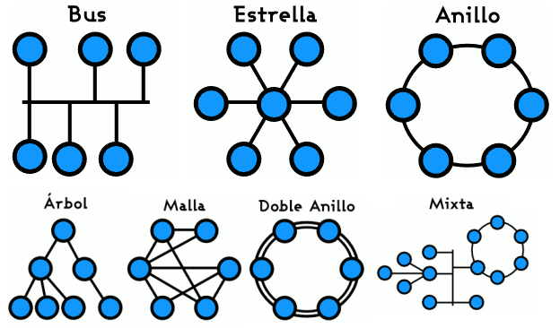

REDES INFORMÁTICAS
Las redes informáticas no son distintas en su lógica de intercambio de los demás procesos de comunicación conocidos: cuentan con un emisor, un receptor y un mensaje, así como un medio a través del cual transmitirlo y una serie de códigos o protocolos para garantizar su comprensión. Claro que en este caso, quienes envían y reciben mensajes son sistemas computacionales automatizados.
Cuando se dispone de computadores en red, es posible crear una comunicación interna, compartir un punto de acceso a Internet o la administración de periféricos (impresoras, escáneres, etc.), así como el envío veloz de datos y archivos sin necesidad de dispositivos de almacenamiento secundario. Esto se logra gracias a una serie de estándares de comunicación, que “traducen” a un mismo idioma los procesos de los diversos computadores (el más común de ellos es el TCP/IP)
Comúnmente, las redes informáticas se clasifican según su tamaño en:
- Redes LAN. Siglas de Local Area Network (en inglés: “Red de Área Local”), se trata de las redes de menor tamaño, como las que existen en un locutorio o cyber café, o un departamento.
- Redes MAN. Siglas de Metropolitan Area Network (en inglés: “Red de Área Metropolitana”) designa redes de tamaño intermedio, como las empleadas en los campus universitarios o en grandes bibliotecas o empresas, que conectan distintas áreas alejadas entre sí.
- Redes WAN. Siglas de Wide Area Network (en inglés: “Red de Área Amplia”), alude a las redes de mayor envergadura y alcance, como lo es la red global de redes, Internet.
Usualmente en las redes informáticas se presentan los siguientes elementos:
- Servidores. En una red no siempre los computadores poseen la misma jerarquía o funciones. Los servidores son los que procesan el flujo de datos, atendiendo a todos los demás computadores de la red (“sirviéndolos”, de allí su nombre) y centralizando el control de la red.
- Clientes o estaciones de trabajo. Se llama así a los computadores que no son servidores, sino que forman parte de la red y permiten a los usuarios el acceso a la misma, empleando los recursos administrados por el servidor.
- Medios de transmisión. Se llama así al cableado o a las ondas electromagnéticas, según sea el caso, que permiten la transmisión de la información.
- Elementos de hardware. Aquellas piezas que permiten el establecimiento físico de la red, como son las tarjetas de red en cada computador, los módems y enrutadores que sostienen la transmisión de datos, o las antenas repetidoras que extienden la conexión (en caso de ser inalámbricas).
¿Qué es topología de red?

Se llama topología de red al modelo de interconexión según el cual estén dispuestas las relaciones entre clientes y servidores. Existen tres modelos de topología de red:
- Lineal o en bus. El servidor se halla a la cabeza de la red y los clientes se reparten a lo largo de una línea a partir de éste, siendo el único canal de comunicación uno solo, denominado bus o backbone (“columna vertebral”).
- En estrella. El servidor de halla en el centro de la red y cada cliente posee una conexión exclusiva, de modo que cualquier comunicación entre las máquinas debe pasar primero por él.
- En anillo o circular. Todas las máquinas están conectadas en círculo, en contacto con las más próximas y en igualdad de condiciones, si bien el servidor sigue contando con su jerarquía.
- Fuente: https://concepto.de/redes-informaticas/
Volver